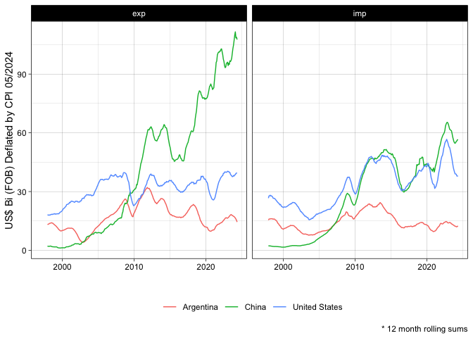
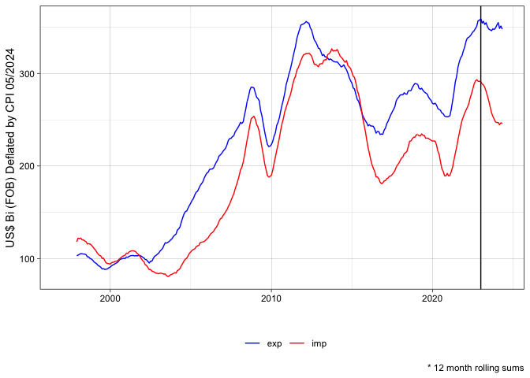
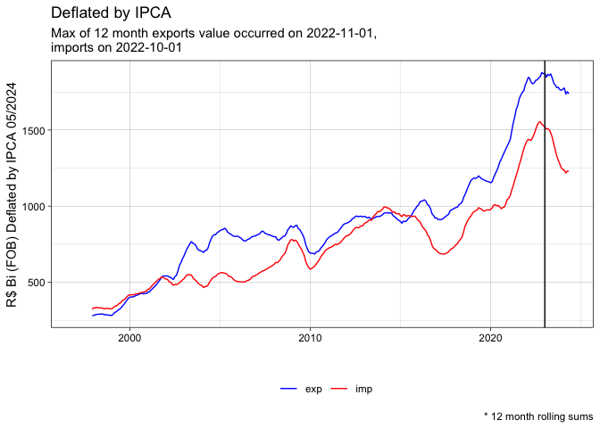

The goal of comexstatr is to make it easy to download, process, and analyze Brazilian foreign trade statistics, available through the web app http://comexstat.mdic.gov.br/, using the underlying bulk data https://www.gov.br/produtividade-e-comercio-exterior/pt-br/assuntos/comercio-exterior/estatisticas/base-de-dados-bruta.
Installation
##devtools::install_github("leoniedu/comexstatr")If you have problems installing arrow, see:
Examples
##
## Attaching package: 'dplyr'
## The following objects are masked from 'package:stats':
##
## filter, lag
## The following objects are masked from 'package:base':
##
## intersect, setdiff, setequal, union
##downloading
#comexstat_download(years = 2022:2024, types = "ncm", ssl_verifypeer=FALSE)
try(comexstat_download(years = 2022:2024, types = "ncm"
, ssl_verifypeer=FALSE
))Automatic downloading can be tricky, due to timeout, (lack of) valid security certificates on the Brazilian government websites, along other issues. The code uses the multi_download function from the curl library, so it resumes download if it fails.
Main trade partners, treating countries in Mercosul and European Union as blocks.
Using a programming language like R makes it easy to generate statistics and reports at the intended level of analysis.
msul <- comexstat("pais_bloco")|>
filter(block_code==111)|>
pull(country_code)
eu <- comexstat("pais_bloco")|>
filter(block_code==22)|>
pull(country_code)
pb <- comexstat("pais")|>
transmute(country_code,
partner=
case_when(country_code%in%msul ~ "Mercosul",
country_code%in%eu ~ "European Union",
TRUE ~ country_name)
)
cstat_top_0 <- comexstat_ncm()|>
left_join(pb) |>
#filter(co_ano>=2017)|>
group_by(partner)|>
summarise(fob_usd=sum(fob_usd))|>
ungroup() |>
arrange(desc(fob_usd))|>
collect()|>
slice(1:5)
cstat_top <- comexstat_ncm() |>
left_join(pb) |>
#filter(co_ano>=2017)|>
semi_join(cstat_top_0, by=c("partner"))|>
group_by(year, partner, direction)|>
summarise(fob_usd=sum(fob_usd))|>
collect()
library(ggplot2)
ggplot(aes(x=year,
y=fob_usd_bi),
data=cstat_top|>
filter(year<=2023)|>
mutate(fob_usd_bi=fob_usd/1e9)) +
geom_line(aes(color=partner)) +
facet_wrap(~direction) +
labs(color="", x="", y="US$ Bi (FOB)") +
theme_linedraw() + theme(legend.position="bottom")Imports and exports by Brazilian state
You will have access to information not available via the web interface http://comexstat.mdic.gov.br/en/home, such as
bystate <- comexstat_ncm() |>
filter(year<=2023) |>
group_by(state_abb, year, direction)|>
summarise(fob_usd=sum(fob_usd))|>
collect()
topstate <- bystate|>
group_by(state_abb)|>
summarise(fob_usd=sum(fob_usd))|>
arrange(-fob_usd)|>
head(3)
ggplot(aes(x=year, y=fob_usd_bi, color=state_abb),
data=bystate|>
semi_join(topstate, by="state_abb")|>
mutate(fob_usd_bi=fob_usd/1e9)) +
geom_line() +
facet_wrap(~direction) +
labs(color="", x="", y="US$ Bi (FOB)") +
theme_linedraw() + theme(legend.position="bottom")
Deflate using CPI (for USD) or IPCA (for BRL) (Experimental)
selected_deflated <- comexstat_ncm()%>%
filter(country_code%in%c(249, 160, 63))%>%
group_by(direction, date, country_code)%>%
summarise(fob_usd=sum(fob_usd), cif_usd=sum(cif_usd, na.rm=TRUE))%>%
comexstat_deflated()%>%
collect()
selected_deflated_r <- selected_deflated%>%
left_join(comexstat("pais"))%>%
group_by(direction, country_name)%>%
arrange(date)%>%
filter(!is.na(fob_usd))%>%
mutate(fob_usd_constant_bi=
slider::slide_index_dbl(.x=fob_usd_constant,
.before = months(11),
.complete = TRUE,
.f = function(z) sum(z, na.rm=TRUE), .i = date)/1e9)
ggplot(aes(x=date, y=fob_usd_constant_bi, color=country_name),
data=selected_deflated_r)+
facet_wrap(~direction)+
geom_line() +
labs(color="", x="", y="US$ Bi (FOB) Deflated by CPI "%>%paste0(format(max(selected_deflated_r$date), "%m/%Y")), caption = "* 12 month rolling sums") +
theme_linedraw() + theme(legend.position="bottom") #+ scale_color_manual(values=c("red", "blue")) 
Trade balance
balance_deflated <- comexstat_ncm()%>%
group_by(direction, date)%>%
summarise(fob_usd=sum(fob_usd), cif_usd=sum(cif_usd, na.rm=TRUE), qt_stat=sum(qt_stat, na.rm=TRUE))%>%
comexstat_deflated()%>%
collect()
library(runner)
nperiods <- 11
balance_deflated_r <- balance_deflated%>%
group_by(direction)%>%
arrange(date)%>%
filter(!is.na(fob_usd_constant))%>%
mutate(
fob_usd_bi=
slider::slide_index_dbl(.x=fob_usd,
.before = months(nperiods),
.complete = TRUE,
.f = function(z) sum(z, na.rm=TRUE), .i = date)/1e9,
fob_brl_bi=
slider::slide_index_dbl(.x=fob_usd*brlusd,
.before = months(nperiods),
.complete = TRUE,
.f = function(z) sum(z, na.rm=TRUE), .i = date)/1e9,
fob_usd_constant_bi=
slider::slide_index_dbl(.x=fob_usd_constant,
.before = months(nperiods),
.complete = TRUE,
.f = function(z) sum(z, na.rm=TRUE), .i = date)/1e9,
fob_brl_constant_bi=
slider::slide_index_dbl(.x=fob_brl_constant,
.before = months(nperiods),
.complete = TRUE,
.f = function(z) sum(z, na.rm=TRUE), .i = date)/1e9
)%>%
mutate(fob_usd_constant_bi_i=fob_usd_constant_bi/fob_usd_constant_bi[date==as.Date("2022-01-01")])
volume_deflated_r <- balance_deflated_r%>%
group_by(date)%>%
summarise(across(matches("^(fob|cif|qt)"), sum))
ggplot(aes(x=date, y=fob_usd_constant_bi, color=direction),
data=balance_deflated_r) +
scale_color_manual(values=c("blue", "red")) +
geom_line() +
labs(color="", x="", y="US$ Bi (FOB) Deflated by CPI "%>%paste0(format(max(selected_deflated_r$date), "%m/%Y")), caption = "* 12 month rolling sums") +
theme_linedraw() +
geom_vline(xintercept=as.Date("2023-01-01"))+
theme(legend.position="bottom") #+ scale_color_manual(values=c("red", "blue")) 
usdmax <- balance_deflated_r%>%
group_by(direction)%>%
arrange(desc(fob_usd_constant_bi))%>%
slice(1)
ggplot(aes(x=date, y=fob_usd_constant_bi, color=direction),
data=balance_deflated_r) +
geom_line(aes(y=fob_usd_bi), linetype=2) +
scale_color_manual(values=c("blue", "red")) +
geom_line() +
#geom_line(aes(y=vl_fob_usd_bi), linetype='dashed')+
labs(color="", x="", y="USD Bi (FOB) Deflated by CPI "%>%paste0(format(max(selected_deflated_r$date), "%m/%Y")), caption = "* 12 month rolling sums", title="Deflated by CPI vs Nominal",
subtitle = glue::glue("Max of 12 month exports value occurred on {usdmax%>%filter(direction=='exp')%>%pull(date)},\n imports on {usdmax%>%filter(direction=='imp')%>%pull(date)}")) +
theme_linedraw() +
geom_vline(xintercept=as.Date("2023-01-01"))+
theme(legend.position="bottom") #+ scale_color_manual(values=c("red", "blue")) ## Warning: Removed 22 rows containing missing values (`geom_line()`).
## Removed 22 rows containing missing values (`geom_line()`).
brlmax <- balance_deflated_r%>%
group_by(direction)%>%
arrange(desc(fob_brl_constant_bi))%>%
slice(1)
ggplot(aes(x=date, y=fob_brl_constant_bi, color=direction),
data=balance_deflated_r) +
scale_color_manual(values=c("blue", "red")) +
geom_line() +
#geom_line(aes(y=vl_fob_usd_bi), linetype='dashed')+
labs(color="", x="", y="R$ Bi (FOB) Deflated by IPCA "%>%paste0(format(max(selected_deflated_r$date), "%m/%Y")), caption = "* 12 month rolling sums", title="Deflated by IPCA",
subtitle = glue::glue("Max of 12 month exports value occurred on {brlmax%>%filter(direction=='exp')%>%pull(date)},\n imports on {brlmax%>%filter(direction=='imp')%>%pull(date)}")) +
theme_linedraw() +
geom_vline(xintercept=as.Date("2023-01-01"))+
theme(legend.position="bottom") #+ scale_color_manual(values=c("red", "blue")) 
Last month
ggplot(aes(x=date, y=fob_brl_constant_bi, color=direction),
data=balance_deflated_r%>%filter(lubridate::month(date)==lubridate::month(max(balance_deflated_r$date)))
) +
scale_color_manual(values=c("blue", "red")) +
geom_line() +
geom_line(aes(y=fob_brl_bi), linetype='dashed') +
#geom_point(aes(y=fob_brl_bi), linetype='dashed') +
labs(color="", x="", y="R$ Bi (FOB) Deflated by IPCA "%>%paste0(format(max(selected_deflated_r$date), "%m/%Y")), caption = "* 12 month rolling sums") +
theme_linedraw() +
geom_vline(xintercept=as.Date("2024-01-01"))+
theme(legend.position="bottom") #+ scale_color_manual(values=c("red", "blue")) ## Warning: Removed 2 rows containing missing values (`geom_line()`).
## Removed 2 rows containing missing values (`geom_line()`).
ggplot(aes(x=date, y=balance_usd_constant),
data=
balance_deflated_r%>%
group_by(date)%>%
arrange(desc(direction))%>%
summarise(balance_usd_constant=fob_usd_constant_bi[2]-fob_usd_constant_bi[1])%>%
na.omit()
)+
#scale_color_manual(values=c("blue", "red")) +
geom_line() +
labs(color="", x="", y="USD$ Bi (FOB) Deflated by CPI "%>%paste0(format(max(selected_deflated_r$date), "%m/%Y")), caption = "* 12 month rolling sums") +
theme_linedraw() +
theme(legend.position="bottom") #+ scale_color_manual(values=c("red", "blue")) 
BRL
ggplot(aes(x=date, y=balance_brl_constant),
data=
balance_deflated_r%>%
group_by(date)%>%
arrange(desc(direction))%>%
summarise(balance_brl_constant=fob_brl_constant_bi[2]-fob_brl_constant_bi[1])%>%
na.omit()
)+
#scale_color_manual(values=c("blue", "red")) +
geom_line() +
labs(color="", x="", y="R$ Bi (FOB) Deflated by CPI "%>%paste0(format(max(selected_deflated_r$date), "%m/%Y")), caption = "* 12 month rolling sums") +
theme_linedraw() +
theme(legend.position="bottom") #+ scale_color_manual(values=c("red", "blue")) 
By CGCE
by_cat <- comexstat_ncm() |>
filter(year>=2022
## usa
#, country_code==249
## china
, country_code==160
) |>
left_join(ncms()%>%select(ncm=co_ncm,
name=no_cgce_n3_ing, code=co_cgce_n3
#name=no_ncm_ing, code=co_ncm
))|>
group_by(name,code, direction, year)|>
summarise(fob_usd=sum(fob_usd))|>
collect()|>
tidyr::pivot_wider(names_from=c("direction", "year"), values_from = fob_usd)%>%
mutate(ep=exp_2023-exp_2022-1, ip=imp_2023-imp_2022-1, si=imp_2022+imp_2023)%>%
arrange(desc(si))%>%
head(10)
ggplot(aes(y=paste0(code, ": ", substr(name,1,40)), x=as.numeric(ip)/1e9), data=by_cat%>%mutate(code=forcats::fct_inseq(code))) + geom_col() + labs(x="", y="")